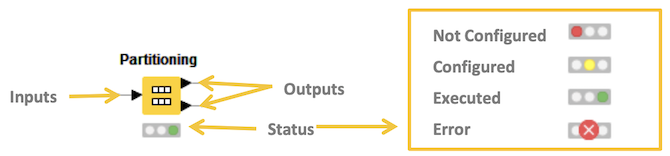

KNIME 概要
KNIME 概要
- 初版作成日: 2020-03-31
-
最終更新日: 2020-04-11
-
KNIME (ナイム)は、データ連携・統合・分析を自動化することができるエンドツーエンドのデータ分析プラットフォームです
- ワークフロー型データ分析プラットフォーム - ノードと呼ばれる機能のかたまり(モジュール)を繋げていくことで、さまざまな処理を実現します
- データ分析、操作、視覚化、およびレポート
- 2000を超えるノード、数多くのワークフローサンプル、包括的な統合ツール、様々なアルゴリズムが利用でき、データに隠されている可能性を発見したり、新たな知見を得たり、未来を予測するのに役立ちます
- 多様な拡張機能の提供
- Text Mining
- Network Mining
- Cheminformatics
- Many integrations - Java, R, Python, Weka, H2O, etc
- 多様な拡張機能の提供
- ビルトイン機械学習モジュールを利用し、高度な分析や分析の自動化を実現することができます
- ワークフロー型データ分析プラットフォーム - ノードと呼ばれる機能のかたまり(モジュール)を繋げていくことで、さまざまな処理を実現します
KNIME IDE

- Workflow エディター
- Node リポジトリー
- コンソール
KNIMEのノードは データに対してタスクを実行します。各ノードには設定画面があるので「入力、処理、出力」の設定を行なったタ後、処理を実行 (画面上部の実行ボタンをクリックする) します。ノードとノードを接続しワークフローを作成します。

現在のノードのステータスは、ワークフローエディター内のノードアイコン下部に表示されるノードステータスでわかります。ノードステータスには、次の４種類あります。
- Not Configured (未設定)
- Configured (設定済み)
- Executed (実行済み)
- Error (実行エラー)